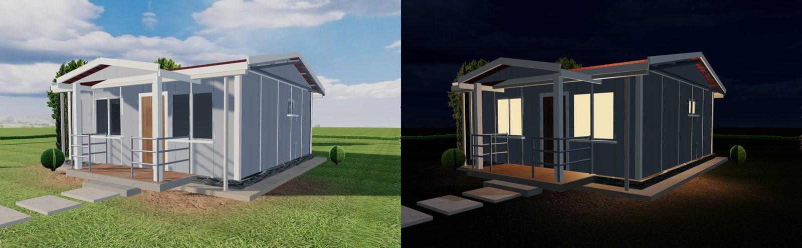
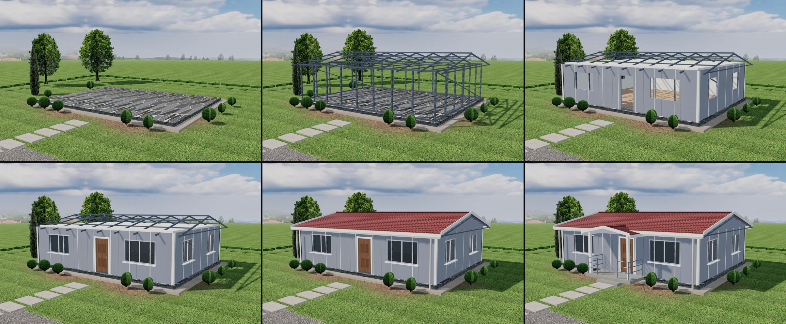
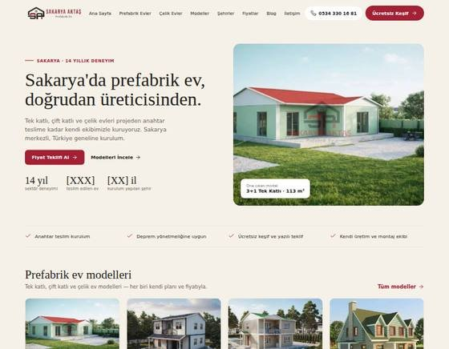
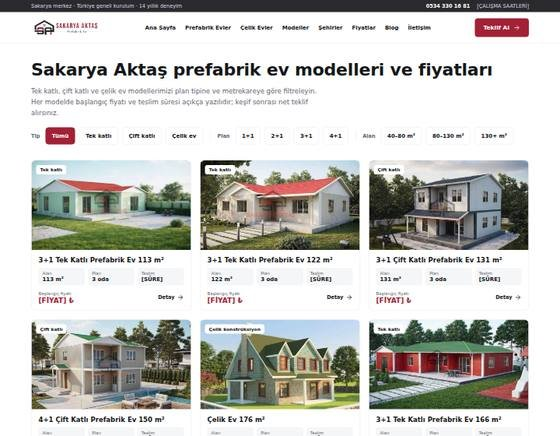
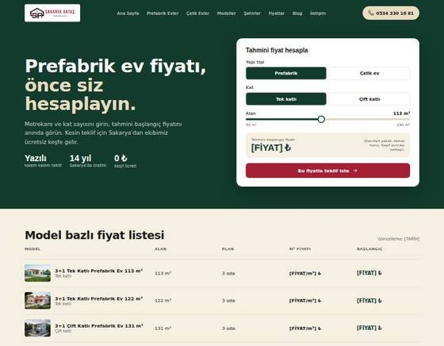
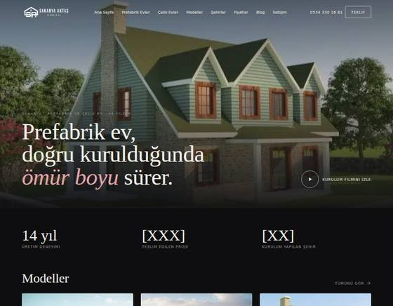
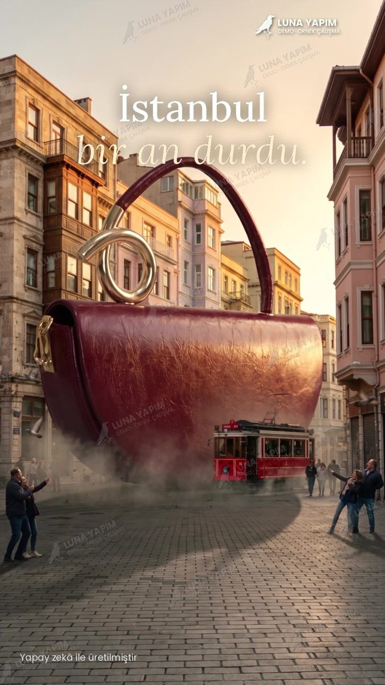
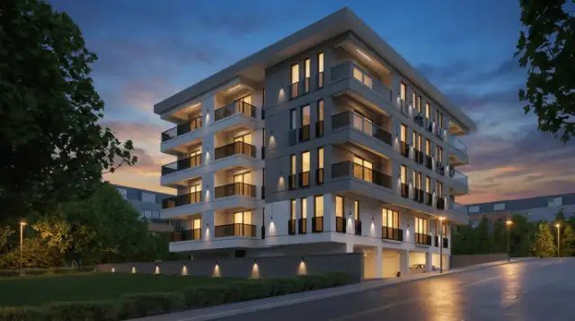
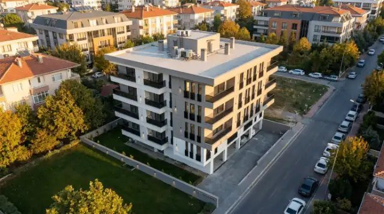
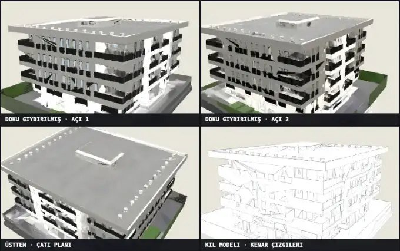

Luna Yapım
Luna YapımThe work behind the report, playable.
Every video and image on this page was produced by Luna Yapım. Demos made for prospects carry our watermark and are previews, not deliverables. This page is private to the recipient of our report and is not indexed.
A manufacturer's site rebuilt in eight days — and a 3D house designer built from their own drawings.
The new site went live on 18 September 2026. Browse it, then open the designer: pick a model, change the facade, walk through the rooms, and download a 4K frame — everything renders in your browser.
Home-page assembly film
The 82 m² model builds itself from 4K frames rendered out of the same 3D geometry the visitor can explore. Made with code, no render farm.

3D house designer — day and night
Eye-level exterior and night mode, captured live from the designer. Inside: floor switching, room labels with m², a first-person walkthrough and a 4K frame download. Geometry from 88 dimensioned client drawings.
Open the designerBrowse the live siteConstruction-process reels for the client's Instagram — AI-assisted, built from the client's real materials and stage-by-stage storyboards. Vertical 9:16, no sound.
From plot to delivery
22 s · nine stages: survey, excavation, foundation, steel frame, panels, windows, landscaping.
Pool house, second film
22.8 s · six clips, zero unused footage — 35 % fewer generation credits than the first film for the same length.

Layer-by-layer process frames
Foundation → steel frame → panels → joinery → roof → delivery, rendered in 4K from the same model that powers the designer.
Five design directions shown to the client before a line of code — the "Transparent price" and "Region master" drafts shaped the final site.

Draft 1 · Craftsman

Draft 2 · Catalogue

Draft 3 · Transparent price

Draft 5 · Cinematic
One master animation, two languages, two formats.
Product promo for a fleet-management platform: live fleet tracking, driver shift and break tracking, OBD-II vehicle data, secure access. Delivered in Turkish and German, 16:9 for the web and 9:16 for social.
Turkish · 16:9
65 s · web and presentation cut.
German · 9:16
65 s · same master, re-timed and re-lettered for vertical social.
The crow series and the studio visuals.
Our home page runs a six-chapter cinematic sequence with a consistent character across every scene; the "six chapters of one job" strip shows set, drone, render station and colour desk. All AI-assisted, all labelled on the site.
Chapter 01
Crow series, opening clip.
Chapter 04
Same character, new scene — identity held across clips.
3D, layer by layer
27 s · how a building is modelled, from block-out to photoreal final frame.

Set · light

Drone · dawn

Render station

Colour desk
A vapour-recovery system explained in 30 seconds.
Requested by Aytemiz for their BGK Phase I–II training material. We answered within a day with a 30-second working-principle demo, then built a single 3D station model and rendered two shots from it to show that every final scene will share one consistent model. Preview quality; watermarked.
Working-principle demo
30 s · Phase I fuel delivery and vapour return, Phase II dispenser internals, coaxial hose cross-section.
One model, two shots
14 s · underground tank cross-section with filling and vapour-return lines; second camera on the same scene file (Blender).
Catalogue images turned into Reels-ready product films.
Two creative concepts from the brand's own product photos: a burgundy "Aura" bag descending from the sky into an Istanbul street, and a metallic evening clutch in a noir setting. Vertical 9:16, made for Instagram.
Aura — descending from the sky
17 s · concept film.
Evening clutch — noir
12 s · second creative, same product line.

Campaign cover
Still frame prepared as the Reels cover.
Their flagship project, re-lit and re-angled before a contract.
From the developer's own render of the Moderna project we produced an evening version, an aerial view and a textured, rotatable 3D model — plus an Instagram performance analysis of their last 60 posts. Everything labelled as a preview; no prices before discovery.

Evening light
Same facade, sunset and interior lighting — Reels cover and feed post.

Aerial view
45° drone-style frame with the surrounding street.

Rough 3D model, four views
Textured GLB from a single image, ready to rotate on a page.
Six products, one codebase each.
KDA Matrix, StillFinder Pro, Trendyol Automation, Luna Fabrika, Luna Pusula and LunaTrendSaphiens — described with interface previews on our software page.

KDA Matrix
Autonomous market research with a proof ledger.

StillFinder Pro
On-device AI hairstyle consultant for barbers, TR + DE.

Luna Pusula
Lead-generation, audit and operations engine.